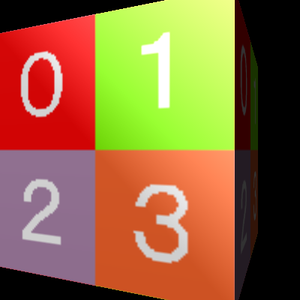
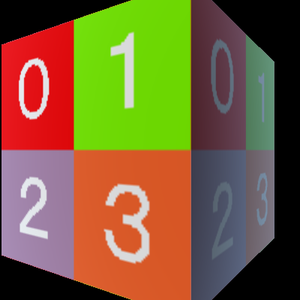

第 08 回
ピクセルごとにライトを計算する
この回の目標
- 頂点ごとのライトと、ピクセルごとのライト(フォンシェーディング)の違いが分かる。
- 頂点シェーダーからピクセルシェーダーへ、座標や法線を渡して計算できる。
開くサンプル

1. samples/A05_NormalMesh_DirLight(頂点ごと。07 で見たもの)
テンプレート: templates/07b_model_dirlight.dxtemplate
2. samples/A11_NormalMesh_DirLight_Phong(ピクセルごと)
テンプレート: templates/08b_model_phong.dxtemplate
並べて動かし、てかり(スペキュラー)の出方を見比べます。
準備: てかりが見えるようにする
このサンプルの箱(NormalBox.mqo)は、マテリアルのてかりの色(スペキュラーカラー)が 0 です。そのままではてかりが出ず、A05 と A11 がまったく同じ絵になります(確かめてあります)。
2 つとも、src/main.cpp の MV1LoadModel の次の行に、下の 2 行を足してから比べます。
C++MV1SetMaterialSpcColor( ModelHandle, 0, GetColorF( 1.0f, 1.0f, 1.0f, 1.0f ) ) ; // てかりの色を白に
MV1SetMaterialSpcPower( ModelHandle, 0, 60.0f ) ; // てかりの鋭さ

A05 頂点ごとA11 ピクセルごと違い
| 頂点ごと(A05) | ピクセルごと(A11) | |
|---|---|---|
| ライトの計算をする所 | 頂点シェーダー | ピクセルシェーダー |
| 計算の回数 | 頂点の数 | 画素の数(ずっと多い) |
| てかり | 頂点と頂点の間でぼやける・消える | 面の途中にもきれいに出る |
読むところ
A11 …PhongVS.hlsl
頂点シェーダーは、ライトを計算しません。代わりに、ビュー空間の座標と法線をピクセルシェーダーに渡します。
HLSL(シェーダー)float3 VPosition : TEXCOORD1 ; // 座標(ビュー空間)
float3 VNormal : TEXCOORD2 ; // 法線(ビュー空間)
TEXCOORDは「テクスチャ座標」という名前ですが、好きな値を渡す箱として使えます。
A11 …PhongPS.hlsl
HLSL(シェーダー)Normal = normalize( PSInput.VNormal ) ; // 混ぜられた法線は長さが 1 でなくなるので、もう一度 1 にする
V_to_Eye = normalize( -PSInput.VPosition ) ; // その画素から視点への向き(ビュー空間では視点が原点)
DiffuseAngleGen = saturate( dot( Normal, -lLightDir ) ) ; // 07 と同じランバート
TempF3 = normalize( V_to_Eye - lLightDir ) ; // ハーフベクトル
Temp = pow( max( 0.0f, dot( Normal, TempF3 ) ), g_Common.Material.Power ) ; // てかり
- ハーフベクトルは「視点への向き」と「ライトへの向き」の真ん中の向きです。法線がこれに近いほど、ライトが目の方へ反射してくる(てかって見える)。
Power(マテリアルのスペキュラーの強さ)が大きいほど、てかりは小さく鋭くなります。
pow( 内積, Power )。Power が大きいほど、法線とハーフベクトルがぴったり合った所だけが光る(てかりが小さく鋭くなる)。課題
- ★8-1てかりの強さ(
Power)を変える。C++ でMV1SetMaterialSpcPower( モデル, 0, 値 )、またはシェーダーでg_Common.Material.Powerの代わりに数を書く(てかりの色が 0 のままだと何も変わらないので、上の「準備」の 2 行を足しておく)。 - ★★8-2輪郭を光らせる(リムライト)。
1.0f - saturate( dot( Normal, V_to_Eye ) )は、正面で 0、輪郭で 1 になる。これを 3 乗くらいして輪郭の近くに絞り、色を足す。 - ★★★8-3A05 の頂点シェーダーを書き換えて、A11 と同じ見た目にしてみる(ピクセルシェーダーに法線と座標を渡す形に作り直す)。
解答例: 8-2 → answers/08_rim_light(【課題 8-2】 の所)
解答例を動かした画面
 元のサンプル(A11)
元のサンプル(A11)
answers/08_rim_light